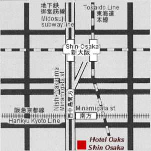

第12回光物性研究会・参加ご予定の皆様へ
宿泊予約のご案内
当研究会への予備登録などをして下さいまして、有り難うございました。
遠方より参加を予定しておられる皆様に、宿泊施設のご案内をさせて頂きます。
「宿泊申込書」
(Acrobat PDF File もしくは添付の申込書) で
御申し込み頂きますと、割引料金で宿泊がご利用いただけます。
宿泊ご希望の方にはご利用をお薦めいたします。
- ホテル オークス新大阪
- 〒532-0011 大阪市淀川区西中島1丁目11-34
電話 ： 06-6302-5141, FAX ： 06-6306-2826
http://www.h-oaks.co.jp/
- 特別優待料金：
- シングル（朝食付き） 5,900円（税・サービス料込） / 1泊
シングル（朝食無し） 5,300円（税・サービス料込） / 1泊
- 最寄駅 ：
- 大阪市営地下鉄御堂筋線「西中島南方」，阪急京都線「南方」 （駅から徒歩3分）
- ホテルへのアクセス
-
- 「地下鉄御堂筋線・梅田駅」から「西中島南方駅」（約7分）
- 「地下鉄御堂筋線・新大阪駅」から「西中島南方駅」（約2分）
- 「阪急京都線・四条河原町駅」から「南方駅」（約40分）
- 「大阪モノレール・大阪空港駅」から「千里中央駅」へ，
北大阪急行線（地下鉄御堂筋線直通）へ乗り換え「西中島南方駅」（約35分）
- ホテルから会場へのアクセス
-
- 「地下鉄御堂筋線・西中島南方駅」から「千里中央駅」（終点）へ，
阪急バス[阪大本部前] 行，または[茨木美穂ヶ丘]行に乗車，
「阪大本部 前」下車 （約45分，片道料金560円）
- 「阪急京都線・南方駅」から「淡路駅」へ，阪急千里線に乗り換え，
「北千里駅」下車 （約25分＋徒歩約20分，片道料金220円）

Modified: 23 Feb, 2021